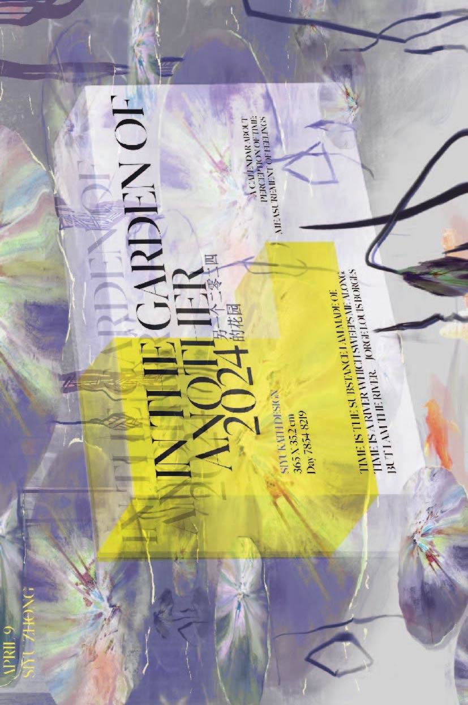
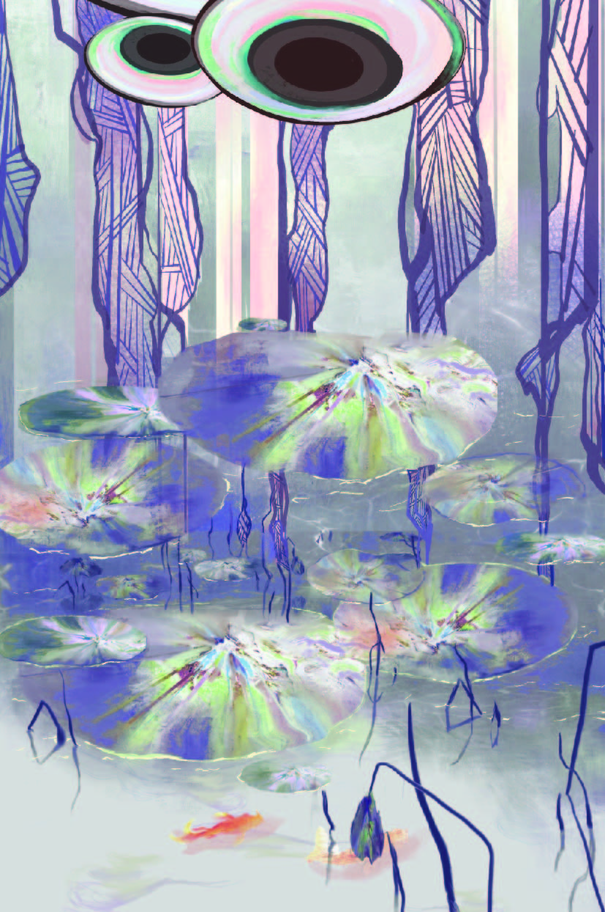

I often consider the question of what is “real”. The imaginary world often reflects aspects of the real world and, through an artist’s expression, can represent something “realer” than what actually exists - the “truth”.
The truth often comes in abstract concepts, and to present the truth, real objects are defamiliarized. Therefore, reality is relatively less real when presented in relation to the truth. I want to create a conceptual visual world through my perception and feelings, a world of otherworldly beauty derived from the truth of natural objects but defamiliarized by my perception. This world represents how the truth - my true perception - defamiliarizes the real world and makes it feel unreal in others’ common perception.


This is a long calendar that depicts my perception of the natural world as I often see it in abstract shapes that take on artificial qualities. The calendar is a long illustration representing a defamiliarized world, with nature's elements being liquefied, twisted, and deformed, and the dates endlessly continuing. The sun, mountains, water, and animals are endowed with artificial qualities as they are being defamiliarized, and the typography are be merged into the environment.



The days are counted from 7854 to 8219, which is the number of days I have been born into this world at the start of 2024. The calendar will be 365 cm long to symbolize the 365 days in the year, but there will be no clear division between months, nor will the dates be in a lined order. This is because my perception of time is not always measured by the standard; it is often measured by my feelings for the season, schooling, or specific projects, and it cannot be measured by week, month, or year.
While this calendar is not “real”, the project reflects the real feeling, which is the “truth”.
PLEASE SCROLL TO VIEW THE ENTIRE CALENDAR: